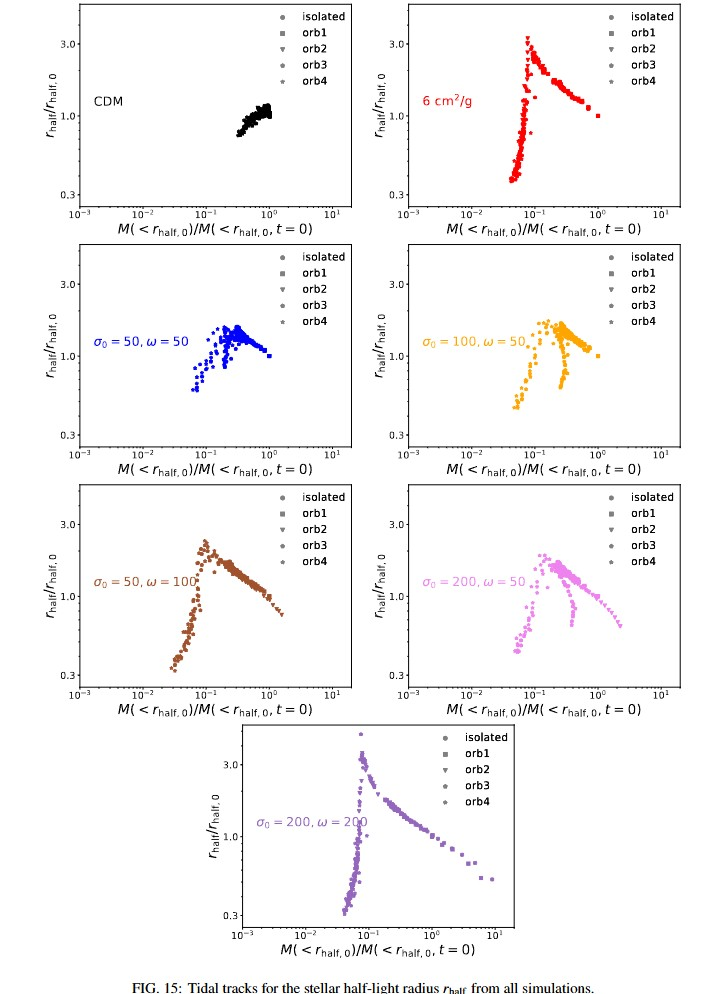

Full tidal-track catalog
Source figure for arXiv:2412.14621 · “Diversity and universality: evolution of dwarf galaxies with self-interacting dark matter”
This page holds the complete tidal-track catalog: the tidal evolution tracks of every simulated dwarf satellite across all seven dark-matter models and five orbits. The research page shows only a few selected, representative cases; the full set is plotted below.
